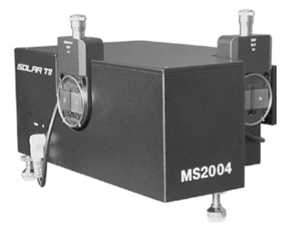
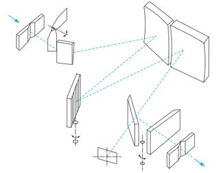

Анализ металлов и ферросплавов


Для анализа широкой номенклатуры металлов и ферросплавов, а также шлаков пред-
лагается анализатор элементного состава LEA-S500.
Преимуществом LEA-S500 является возможность анализа химического состава на одном приборе черных, цветных,
особо чистых металлов, ферросплавов и продуктов плавки. Огромные возможности при исследовании металлов
открывается благодаря способности прибора осуществлять контроль распределе- ния элементов по поверхности и
глубине образца с шагом от 50 мкм.
Анализатор может быть использован для следующих целей:
- Анализ сталеи
— углеродистых, среднелегированных, высоколегированных,
в том числе нержавеющих и быстрорежущих – определение массовых долей элементов:C,P, S, B, Al, Mn, Si,
Ni,Cu, Mo, V, W, Cr, Co, Nb, Sr, Ti, Zr и т.д.( по желанию заказчика) в преде- лах от 0.1 ррм до 50% со
средней квадратич- ной погрешностью от 1 до 3%
- Анализ чугунов
серых, легированных, специальных определение массовых
долей элементов:C,P, S, B, Al, Mn, Si, Ni,Cu, Mo,V,W,Cr,Co,Nb,Sr,Ti, Zr,Se ит.д.(по желанию заказчика) в
пределах от 0.1 ррм до 50% со средней квадратичной погрешностью от 1до 3%
- Анализ меди и медноцинковых сплавов (латуней)
определение массовых
долей элементов: P, B, Al, Mn, Si, Ni, Pb, Sn, Zn, Fe, Sb,Bi, As, и т.д.( по желанию заказчика) в пре-
делах от 0.1 ррм до 50% со средней квадра- тичной погрешностью от 1 до 3%